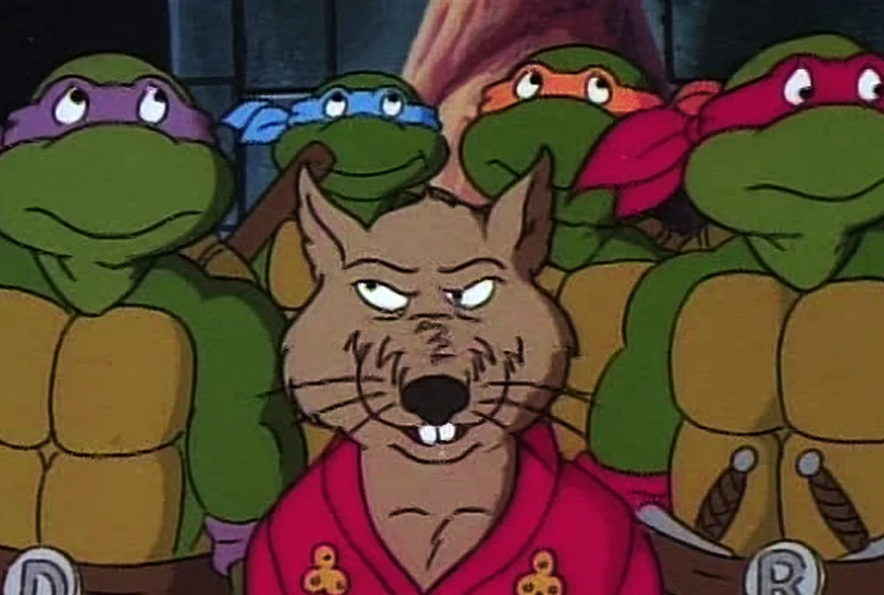

Сплинтер (англ. Splinter), известный как Мастер Сплинтер (англ. Master Splinter) — персонаж франшизы «Черепашки-ниндзя», представляющий собой мутировавшую крысу, ставшую наставником четырёх черепах, которые подверглись воздействию того же мутагена. В прошлом он был домашним питомцем мастера боевых искусств Хамато Ёси, однако, в некоторых средствах массовых информации Сплинтер и Ёси являются одним и тем же персонажем.
С момента первого появления в комиксах Mirage Studios в 1984 году, Сплинтер появился во многих теле-, кино- и видеоадаптациях.